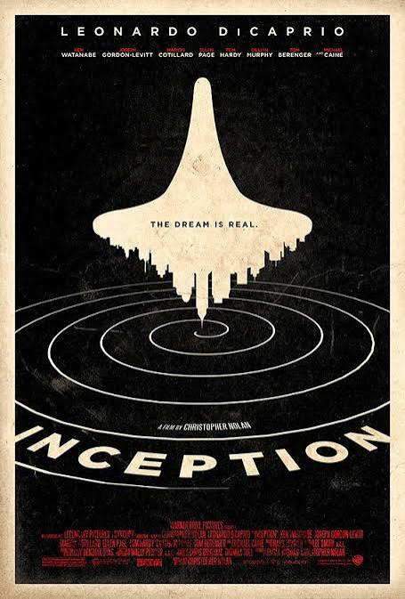

שנה:2010
ז'אנר:מדע בדיוני, פעולה
דירוג: ⭐8.8
דום קוב הוא גנב מיומן, הטוב ביותר בתחומו באמנות המסוכנת של "חילוץ" – גניבת סודות יקרי ערך ממעמקי התת-מודע בזמן חלימה, הרגע שבו התודעה פגיעה במיוחד. יכולתו הנדירה של קוב הפכה אותו למבוקש מאוד בעולם הבוגדני של ריגול תעשייתי, אך גם הפכה אותו לנמלט בינלאומי ועלתה לו בכל מה שאהב אי פעם. כעת, ניתנת לקוב הזדמנות לגאולה. משימה אחת אחרונה עשויה להשיב לו את חייו, אך זאת רק אם יצליח לבצע את הבלתי אפשרי: "השתלה" (Inception). במקום לבצע את השוד המושלם, על קוב וצוות המומחים שלו לפעול בכיוון ההפוך: משימתם אינה לגנוב רעיון, אלא לשתול אחד כזה. אם יצליחו, זה עשוי להיות הפשע המושלם. אך שום תכנון קפדני או מומחיות לא יוכלו להכין את הצוות לאויב המסוכן, שנראה כי הוא צופה מראש כל צעד שלהם – אויב שרק קוב יכול היה לצפות את בואו.
במאי וכותב: Christopher Nolan
שחקנים ראשיים: Leonardo DiCaprio/ Joseph Gordon-Levitt/ Elliot Page
לעמוד הסרט ב-IMDB טריילר ביוטיוב